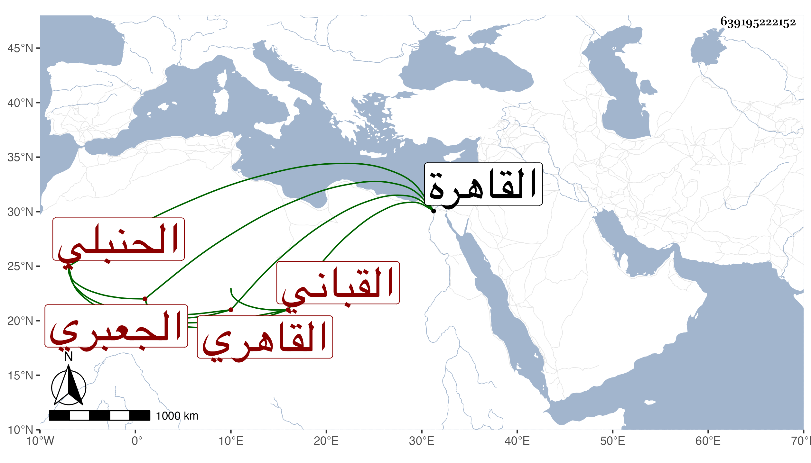

0902Sakhawi.DawLamic.ITO20230111-ara1.EIS1600.639195222152
Biography ID: 639195222152
156
محمد بن محمد بن أبي بكر بن إسماعيل بن عبد الله الشمس أو العماد الجعبري القاهري الحنبلي القباني الماضي أبوه . ولد بعد سنة ثمانين وسبعمائة تقريبا بالقاهرة ونشأ بها فقرأ القرآن وحفظ الخرقي وعرضه على الكمال الدميري وأجاز له في آخرين وسمع البخاري إلا اليسير منه علي ابن أبي المجد وختمه علي التنوخي والعراقي والهيثمي ، واشتغل بالتعبير على أبيه وغيره وتعلم أسباب الحرب كالرمي وجر القوس الثقيل وعالج وثاقف وفاق في غالبها ونظم كثيرا من الفنون الخارجة عن الابحر كالمواليا ثم رأى في المنام أن في فمه شعرا يعني بفتح المعجمة والمهملة كثيرا وأنه قلعه فأصبح وقد قلع من قلبه حب الشعر وعادت عليه بركة سماعه للحديث فتركه ونسى ما كان قاله إلا النادر ومنه :
| يا راشق القلب مهلا | أصبت فاكفف سهامك |
| ويا كثير التجني | منعت حتى سلامك |
وكان كأبيه صوفيا بسعيد السعداء بل قباني المخبز بها أجاز لي . ومات في شوال سنة إحدى وخمسين رحمه الله .
